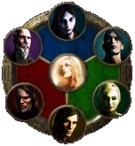
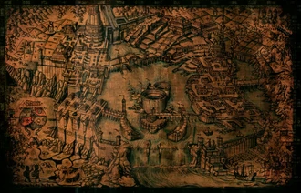

The are 6 starter classes you can choose to play as in Path of Exile, each of which can branch out into one of three advanced classes called Ascendancies. These Ascendancies provide powerful abilities each based around distinct themes. There is also a 7th starter class that you can unlock during the story which only has a single Ascendancy to choose from but is special in that it combines aspects of all the other Ascendancies. This allows for far more control of you character's build picking and choosing from the best bits of all the other classes.

The story in Path of Exile takes place over 10 acts. You start out washed up on the beach and as you progress through the story you encounter many strange and eerie places all with the threat of death around the next corner.